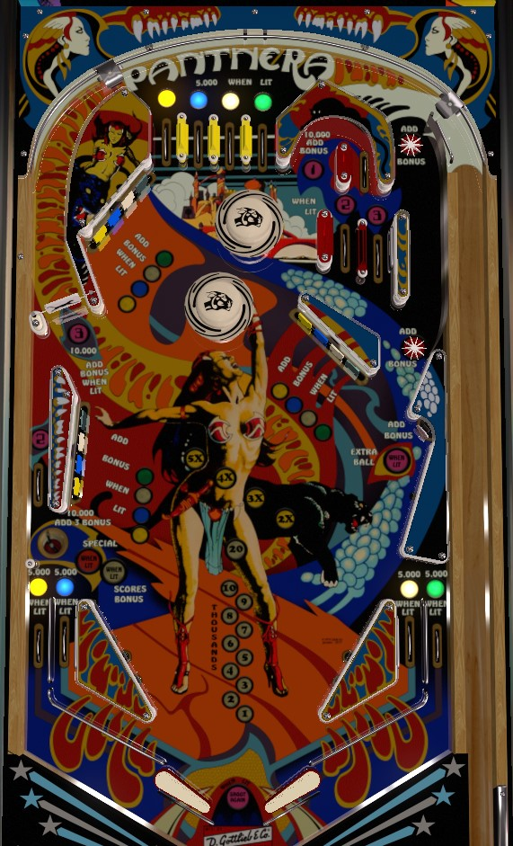

Collect the yellow, blue, white, and green colours as quickly as possible, preferably from the top lanes, to light all of the game's drop targets. Lit drop targets score 5,000 points and a bonus advance, while unlit targets only score 500. Bonus multiplier is advanced each time you light a colour and then hit all 3 drop targets of that colour; it also always carries over from ball to ball. When base bonus is over 20,000, the left saucer collects the bonus including multiplier. Collecting all 4 colours lights the left saucer for special. 1-2-3 lanes are only good for lighting the right standup for extra ball, which is worth 50,000 if EBs are off.
A plunged ball can go through any of the 4 top lanes, or it can come down the right orbit. The top lanes are always preferable, especially when lit. The right orbit contains two star rollovers, which each score 50 points and a bonus advance. The four top lanes award the yellow, blue, white, and green colours respectively when lit. Roll through a lit lane to unlight it; lit lanes score 5,000 points, while unlit lanes score 500. The yellow, blue, white, and green colours can also be collected at the game's in/out lanes, from left to right. Collected colours are held in memory from ball to ball.
There are three 4-banks around the playfield; each bank has a yellow, blue, white, and green drop target. Individual drop targets are lit if their corresponding colour has been collected. Unlit drop targets score 500 points. Lit drop targets score 5,000 points and a bonus advance. Lighting a colour then knocking down all 3 drop targets of that colour increases the bonus multiplier by 1x; do this with all 4 colours for the max bonus multiplier of 5x. Drop targets only reset mid-ball if all 12 targets across the 3 banks are cleared. If the ball drains, only knocked-down targets corresponding to collected colours will stay in memory for the next ball.
The number 1 can be collected from a semi-obscured candy cane lane vaguely in the upper right of the table. The 2 can be collected at a lane behind the left drop targets. The 3 can be collected at the left spinner. The 2 and 3 can both also be collected in split lanes underneath the 1 lane. Roll through a lit lane or feature to unlight it. With the exception of the spinner, all 1-2-3 targets score 10,000 points and a bonus advance. For the spinner, if it is lit, the first 5 spins of the spinner score 10,000 points and a bonus advance each. After 5 spins, the spinner unlights and returns to its usual 100 points per spin value. If the lit spinner is activated but comes to a complete stop before registering 5 times, it will also unlight. Collecting all of 1-2-3 relights all 1-2-3 lanes and lights the right standup target for an extra ball.
The left saucer is in a bit of no man's land, being difficult to shoot directly at positioned at the bottom of the far left #2 side lane. The most common way to end up here seems to be from ricochets off the slingshots. When not lit for anything else, this saucer scores 10,000 points and 3 bonus advances. When the 4 colours are completed, this saucer is lit for a special alternating with slingshot hits for the remainder of that ball. If the base bonus is at least 20,000 points when the ball enters the saucer, the saucer scores a full collect of the entire bonus including multiplier, after which the base bonus is reset back to 1,000 points, but any earned multipliers are kept intact.
Panthera has a conventional in/out lane setup. The in/out lanes are copies of the top lanes, scoring 5,000 points when lit, 500 when not lit, and collecting the yellow, blue, white, and green lights from left to right. Notice that, given how this game is a widebody, the slingshots are rather large and are positioned at a less vertical angle than may be considered typical.
Bonus is advanced by any 1-2-3 lane, the first 5 spins of the lit spinner, and any drop target corresponding to a collected colour. Collecting a colour then hitting all 3 of its corresponding drop targets increases the bonus multiplier; do this with all 4 colours to max out the bonus multiplier at 5x. Max bonus is 5x 29,000 = 145,000 points. Bonus multiplier always carries over from ball to ball; base bonus never does. Bonus can be collected mid-ball if the base bonus reaches at least 20,000 points as described in the "Lower left saucer" section above.
In competition/novelty play, specials and extra balls both score 50,000 points.